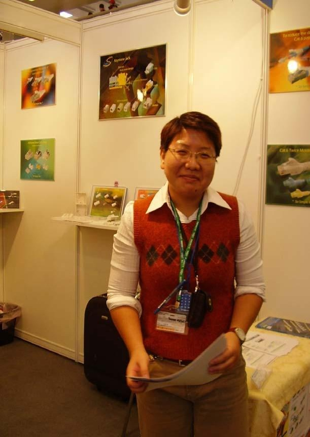

Selected work
已完成作品
先看一支已公開的完整影片。其他系列與企劃素材會在影片正式完成並確認公開後再加入播放區。
Daily Funny English橘貓英語動畫系列｜系列企劃展示
Daily Funny English
以 Yuwen 與橘貓的生活情境，設計一句英文、一次犯錯與一次清楚糾正的短影音系列。此處展示為企劃方向，尚未列作可播放的完成影片。
Taiwan Travel × AI旅遊敘事與短影音製作方向
台灣旅遊故事
結合景點、地方文化與導遊視角的短影音企劃方向。分鏡及企劃素材不代表已完成影片。
AI English Education英語動畫教學內容
Video services
30 秒與 60 秒影音製作
依訊息複雜度與發布平台，規劃精簡版或完整敘事版。報價會依素材、動畫量、語言與交付規格個別討論。
SHORT & CLEAR30 秒
單一訊息短影音
適合一個產品亮點、一句英文、一個服務特色或一段快速吸睛的社群內容。
- 主題梳理與開場 Hook
- 口白、字幕稿與分鏡規劃
- AI 視覺素材與基礎動態剪輯
- 字幕、音樂／音效與直式輸出
STORY EDITION60 秒
完整故事短影音
適合人物介紹、旅遊敘事、教學步驟或需要鋪陳與收束的品牌內容。
- 主題與敘事結構設計
- 完整腳本、鏡頭節奏與分鏡
- AI 影像／動畫、旁白與字幕整合
- 直式短影音剪輯與交付檔案
服務項目依需求確認；腳本、素材授權、修改次數、語言版本、配音及原始專案檔是否包含，會在正式報價前逐項說明。
What we can make
服務範圍
以個人創作與作品集方向為基礎，依合作目標調整內容形式與製作深度。
從一個想法，
一起做到能發布。
可從單一腳本／分鏡開始，也可委託短影音企劃與製作。先確認受眾、用途和素材，再安排工作範圍。
- AI 社群短影音Reels、Shorts 等直式內容
- 英語動畫與教學日常英文、文法、單字故事
- 台灣旅遊內容景點敘事、導覽與旅遊英文
- 個人品牌影音自我介紹、作品集、職涯故事
- 腳本與分鏡鏡頭表、口白字幕與 AI Prompt
- 多語字幕與剪輯依平台及受眾安排語言版本
01需求討論02腳本分鏡03視覺與配音04剪輯字幕05確認交付

About Yuwen
懂內容，也懂怎麼把訊息說清楚。
我是曾語文 Yuwen Tseng，經歷涵蓋國際業務溝通、旅遊導覽、英語教學與數位內容。現在以 AI 作為創作工具，將專業資訊轉化為容易理解、適合分享的影音故事。
Yuwen AI Studio 聚焦 AI 影音接案與內容製作。作品集保留可查證的公開作品；企劃與分鏡會清楚標示階段，不以構想取代完成案例。
Start a project
透過官方 LINE 詢價 ↗有影片想法？聊聊需求。
請簡單說明用途、發布平台、影片長度與預計時程，我會依範圍回覆合作方式。
目前提供 LINE 作為詢價入口。請勿在訊息中傳送密碼或付款資料；確認需求後再討論報價與交付方式。